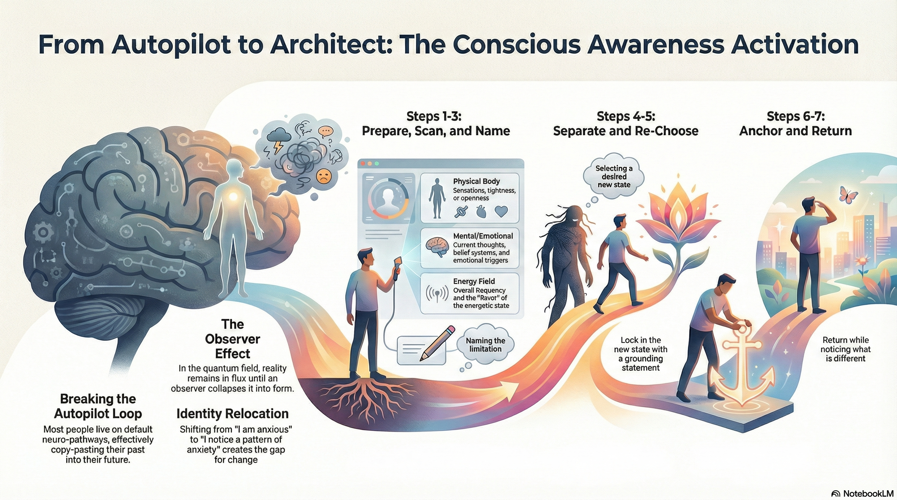

Instructor: Regan Hillyer
Downloads & Resources

Purpose: Shift clients from autopilot (unconscious) to intentional creation (conscious manifestation). Move them from being IDENTIFIED with their thoughts/emotions to OBSERVING them.
Key Shift: "I AM anxious" → "I NOTICE I have anxiety"
The 7 Steps: Prepare Field → Invite Observation → Name the Experience → Create Separation → Choose New State → Anchor the State → Return to Space
Core Insight: Most people don't HAVE thoughts—they think they ARE their thoughts. This tool creates separation.
The Conscious Awareness Activation is a process that moves clients from a state of unconscious autopilot to intentional creation. It helps them take responsibility for their internal reality so they can actually change it.
Most people are functioning on autopilot. They have the same neural pathways firing every day, thinking the same thoughts, running the same emotional patterns, and creating the same results.
"They're still sitting in the seat of an observer and creating all of that—they just don't know that they're constantly collapsing the quantum field into form. Literally copy-pasting from their past."— Regan Hillyer
Remember: particles in the quantum field are oscillating as waves of possibility until the observer collapses them into form. If your client is observing that something is out of their reach or impossible, the field collapses into that. This tool puts them back in the driver's seat.
This tool shifts clients from being identified with information to a state of observation. Most people don't HAVE thoughts—they think they ARE their thoughts.
The best way to hold this tool with clients is to notice all of this in yourself. How many times do you say "I'm tired" or "I'm stressed"? Be your own coach. Catch yourself and reframe: "I'm noticing I feel tired right now." The more you can see yourself, the more you'll hold that energetic code in the field of coherence for your clients.
Invite your client to sit comfortably, close their eyes, and bring attention to their body and breath.
"Allow yourself to ground into this present moment. Take a deep breath in and out."
Tip: Know your client—some need 3 breaths to settle, others (like Vishen!) want to move fast.
Guide them to scan their internal world. Use open-ended questions—never yes/no.
Ask:
DON'T: "Are you feeling anxious?" or "Do you feel calm?" — No yes/no questions!
Ask them to summarize what's limiting them.
"Out of everything you're noticing right now, what is it that's limiting you?"
Why it matters: Through naming it, they're tagging information in their quantum field and bringing clarity. For someone on autopilot, this is huge.
Guide them to realize they are NOT the pattern—they are the one OBSERVING the pattern.
"Thank you for sharing. Let your system remember right now that you are not the fear. You are the one observing the fear."
What happens: This is a direct hypnotic command. You're separating information that was clustered together, and their system steps out of being entangled with it. Watch for body language shifts—this can be huge for people.
Ask them what they'd like to feel instead, then amplify it.
"How would you love to feel now instead?"
When they answer (calm, confident, open, trust, etc.):
"Feel the feeling of calm right now. Allow it to run through every cell. Take a deep breath. Now double that feeling. Let it triple. Breathe it into every single cell of your being."
Give them time. If they've felt anxious their whole life and just realized they're not their anxiety, this is huge. Check in: "Give me a nod when that feels complete."
Help them lock in the shift with a grounding statement.
Examples:
Gently bring them back and ask the key question.
"Noticing you're coming back into your body, back into the room. Take a deep breath and gently open your eyes."
Then ask: "What do you notice that is different?"
Why "different"? We're conditioned to notice what is THE SAME. Train their system to notice what has CHANGED. It doesn't matter if they say "the green looks brighter"—what matters is their system is noticing change.
As you guide clients through this process, constantly scan for these indicators of change:
Body Language
How they're sitting, arms folded → open, twitches, physical shifts
Breath Changes
Deep sighs, relaxation of breath, visible exhales
Emotional Release
Softening, crying, feeling more relaxed
Voice & Tone
Mental clarity shift heard in how they speak
Language Changes
"I didn't realize..." or "I've never seen it this way" or "The anxiety—I realize now it's not even mine"
Eye Flickering
Rapid eye movement indicates the brain is assimilating new information
Use these questions to help clients process and integrate the shift:
Sometimes completing this tool moves something sitting underneath the surface. If they say "I notice I have a lot of sadness coming up and I don't know why"—that's your cue. Move to the next tool. There are often layers to work through.
Regan demonstrated this process live with a volunteer named Mil, who wanted to manifest organizing an event for young artists but felt unfocused.
Limiting factor: FEAR
"You are not the fear. You are the one observing that there is fear present in your system."
Her response: "Liberating."
Chose: Gratitude and energizing energy
Amplified: Doubled, tripled, running through every cell
"Go for it."
This tool moves clients from being identified with their thoughts/emotions to observing them. That tiny gap—"I'm not the anxiety, I'm noticing the anxiety"—is where all transformation happens.
You don't need to explain quantum physics. Just guide them through the process—they'll feel the shift internally. The experience creates the update, not the explanation.
Some clients process in 8 minutes, some need 3 hours. Feel your client. Don't rush through Step 5 just because you want to move on—this might be the most important moment of their life.
Practice on yourself first. Catch yourself saying "I'm tired" and reframe it to "I'm noticing fatigue." The more you embody this, the more powerfully you'll hold it for clients.